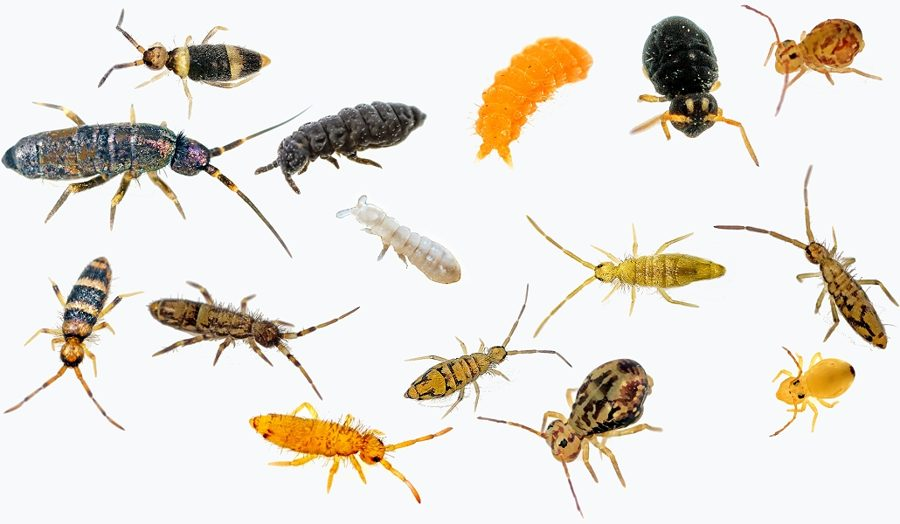

स्प्रिंगटेलSpringtails
Collembola · · SFL-0012

- Scientific nameवैज्ञानिक नाम
- Collembola Lubbock, 1873
- Familyकुल
- —
- Hindiहिंदी
- स्प्रिंगटेल
- Local namesस्थानीय नाम
- springtail, spring tail, mitti ka kida, collembola
- Status hereयहाँ की स्थिति
- native
- Movementआवागमन
- Resident, here all year
- IUCNIUCN
- not evaluated
- Reviewसमीक्षा
- audited and independently read
When to look कब देखें
Expected mainly in May, June, July, August, September, October.मुख्यतः मई, जून, जुलाई, अगस्त, सितंबर, अक्टूबर में अपेक्षित।
Uses and possibilities उपयोग और संभावनाएँ
Drawn from the documented uses in the profile below, where each is labelled traditional, current or a research lead. All uses →
स्प्रिंगटेल / Springtails
Collembola Lubbock, 1873 — (order-level profile)
स्प्रिंगटेल (कूदने वाली पूँछ) — गीली पत्तियों और सड़ते खाद के ढेर में रहने वाले सूक्ष्म कीड़े, जो छोटी, काली या भूरी धारीदार चीजें दिखते हैं। अपनी पूँछ की लचकदार संरचना से कूद सकते हैं — एक बिलकुल छोटी सी छलाँग, पर मिट्टी में बहुत आम। बरसात में जब खाद गीली हो, तब यह खुद आ जाते हैं, सड़ी हुई हरी चीज़ें खाते हैं और मिट्टी को पोषक बनाते हैं। हर गीली जगह में होते हैं, पर अलग-अलग जातियाँ होती हैं जिन्हें पहचानना माइक्रोस्कोप के बिना असंभव है।
Quick Identification त्वरित पहचान
| Feature | Description |
|---|---|
| Size | 1–3 mm; among the smallest terrestrial arthropods |
| Body shape | Small, rounded, compact; six legs; no wings |
| Colour | Grey, brown, tan, or dark; some species have stripes or spots |
| Antennae | Four-segmented; present but not particularly prominent |
| Tail | Ventral furca (forked spring-like organ) folded under the body; may be extended to jump |
| Segmentation | Six body segments (six-legged, hexapod classification) |
| Surface texture | Some are smooth; others have granular, hairy or wart-like surfaces |
| Behaviour | Can jump suddenly by releasing the furca when disturbed |
Field tip: In wet leaf litter or a damp compost pile, look for tiny (1–3 mm), dark-coloured arthropods that may suddenly jump when exposed. The furca (forked tail) is the distinguishing feature, visible only under magnification. A hand lens reveals the form but species identification requires a microscope.
हिंदी — कैसे पहचानें: गीली जगह पर, सड़ी पत्तियों में या खाद के ढेर में, बहुत छोटे काले या भूरे कीड़े जो कूद सकते हैं। छुओ तो उछल जाएँ। लेकिन जाति जानने के लिए माइक्रोस्कोप चाहिए।
Morphology आकारिकी
Biometrics (common collembola from eastern UP leaf litter and compost):
| Measurement | Range |
|---|---|
| Body length | 1–3 mm |
| Antennae length | 0.2–0.5 mm |
| Furca length | 0.1–0.3 mm |
Body structure: The body is divided into a head, thorax (three segments: T1, T2, T3) and an abdomen (four segments: A1–A4). Total of six legs (three pairs), one pair on each thoracic segment. Collembolans are hexapods (six-legged arthropods) and are not insects, though they were historically classified as such.
Furca (spring-tail): The defining feature is the furca, a forked appendage on the fourth abdominal segment, held in a folded position under the body by a catch organ (the retinaculum). When the retinaculum releases, the furca springs downward, propelling the animal upward and forward — a jump that can reach 10 cm in some species.
Antennae: Four segments; sensitive to touch and chemical stimuli.
Colour and markings: Highly variable among species; some are uniformly coloured while others have stripes, spots or tubercles (wart-like projections).
हिंदी: छह टाँगें, हर तरफ दो। पूँछ की संरचना (फर्का) जो कूद के लिए बसंत की तरह काम करती है। रंग-बिरंगे, काले, भूरे, धारीदार हो सकते हैं।
Behaviour & Ecology व्यवहार और पारिस्थितिकी
Detritivorous decomposers: Springtails feed on decaying plant matter, fungi, algae and bacteria in soil and leaf litter. They ingest large quantities of soil microbes and fungi, which they digest and return to the soil, facilitating nutrient cycling. In this way, they are crucial ecosystem engineers: their activity breaks down complex organic matter and makes nutrients available to plants.
Moisture dependence: Springtails lack waterproofing of the outer integument and must remain in moist environments. They are found in highest densities in habitats with high moisture and high organic matter: wet leaf litter, compost heaps, swamp margins and the soil surface after rainfall. In dry seasons or dry microhabitats, they enter dormancy or migrate to moister zones.
Reproduction: Sexual; cross-fertilizing. Males deposit sperm packets on the ground, which females take up. Females lay eggs in moist leaf litter; embryonic development is rapid (5–10 days in warm conditions), and juveniles mature quickly.
Community ecology: Springtails are often the most abundant arthropods in soil by biomass. Different species prefer different moisture levels, food sources and soil types. In a single compost pile or forest litter, dozens of species may coexist.
Predators: Ants, beetles, spiders, pseudoscorpions, centipedes, frogs and toads feed on springtails.
हिंदी: सड़ी पत्तियों, कवक और बैक्टीरिया खाते हैं। मिट्टी को जीवंत बनाते हैं। बहुत गीला होना ज़रूरी है, सूख जाएँ तो सो जाते हैं या भाग जाते हैं। चींटियाँ, मकड़ियाँ और मेंढक इन्हें खाते हैं।
Life Cycle / Phenology जीवन चक्र
| Stage | Duration | Notes |
|---|---|---|
| Egg (in moist leaf litter) | 5–10 days at 20–25°C | Laid in clusters; some species lay eggs year-round |
| Nymph (juvenile stages; 4–6 instars) | 20–40 days at optimal temperature | Growth via moults; rapid in warm, moist conditions |
| Adult | Several months to 1 year | Reproduce continuously in suitable conditions |
| Total lifecycle | 1–2 months under optimal conditions | Multiple generations per year in monsoon regions |
| Dormancy / diapauses | Minimal in monsoon regions | Does not enter cryptobiosis; avoids drying by moving to moist zones |
Peak activity: May–October in eastern UP (monsoon onset to post-monsoon). Population abundances are highest in August–September when leaf litter and compost are most moist. Abundance declines sharply in dry season (November–February) but does not disappear if moisture persists underground or in protected microhabitats.
हिंदी: मानसून में सबसे ज़्यादा संख्या। सड़ी पत्तियाँ गीली हों, तो अंडे और बच्चे दोनों खूब होते हैं। सर्दी में कम, पर पूरी तरह नहीं।
Host Plants or Prey आहार
Decomposer, not predator:
Springtails feed on dead organic matter only — they are detritivores.
- Primary diet: Decaying leaves, wood fragments, plant litter, humus
- Secondary diet: Fungi (including fungal spores and mycelium), algae, bacteria
- Microbial consumption: Like most soil arthropods, they ingest significant quantities of soil microbes, which are broken down and recycled
Predators / Natural Enemies शत्रु
- Ants: Various ant species actively forage in leaf litter and soil for springtails
- Beetles: Ground beetles (Carabidae) and other soil beetles prey on springtails
- Spiders: Soil spiders and web-spinning spiders capture springtails
- Pseudoscorpions: Small arachnids that hunt springtails in litter
- Centipedes: House Centipede and other centipede species prey on springtails
- Amphibians: Frogs and toads (genus Bufo, Fejervarya, Polypedates) actively forage in wet leaf litter
- Small reptiles: Skinks and small lizards eat springtails in leaf litter
- Birds: Ground-foraging birds peck in litter for springtails
Agricultural / Human Relevance कृषि प्रासंगिकता
Soil health indicator: The presence of abundant springtails indicates:
- High organic matter and humus content
- Good soil moisture
- Active decomposition occurring
- Healthy ecosystem function
Compost and vermicompost: Springtails colonize compost heaps naturally and contribute to decomposition. They are often seen crawling over Eisenia fetida (red worm) beds, where they consume fungal growth and help break down organic material alongside the worms. This is beneficial, not harmful.
Compost pest (rare): In some cases, very high springtail populations in vegetable transplant nurseries can damage seedlings by nibbling roots; this is rare in field conditions and more common in enclosed systems.
Soil restoration: Projects to restore degraded soils often monitor springtail abundance as a measure of biological recovery.
Traditional knowledge: In villages of the Gangetic plain, the presence of springtails in wet fields or compost piles is noticed and understood as a sign of active decomposition and good soil biology.
हिंदी: खेत को भर पानी देने के बाद, स्प्रिंगटेल खुद दिखने लगते हैं। यह अच्छी निशानी है कि मिट्टी सक्रिय है। खाद के ढेर में इन्हीं को देखना चाहिए — केंचुओं के साथ काम करते हैं।
Expected Locally स्थानीय रूप से अपेक्षित
Not a field record. Written from published accounts for eastern Uttar Pradesh. No confirmed local sighting yet — if you have seen it, that is what the atlas needs.
अभी तक स्थानीय पुष्टि नहीं। यह विवरण प्रकाशित स्रोतों से है, किसी अवलोकन से नहीं।
Springtails are expected in:
- Wet leaf-litter piles in the Sal and mixed deciduous forests of Basti district
- Compost heaps and dung piles in gardens and village waste areas
- Monsoon-flooded grasslands and swamp margins along the Gandak and Ghaghra river systems
- Rice field margins and irrigation canal banks with permanent moisture
- Moist soil under fallen logs and bark in wet habitats
Peak visibility: July–September (monsoon and post-monsoon) when soil moisture is high and leaf litter is abundant. Gardeners and farmers in Basti district may notice sudden increases in springtails in wet compost piles or after heavy rainfall.
Distribution वितरण
Global range: Found on every continent except Antarctica. Particularly diverse and abundant in tropical and subtropical regions with high rainfall.
In India: Distributed throughout; especially abundant in regions with significant monsoon rainfall — Western Ghats, Northeast India, Gangetic flood plains, coastal areas and Himalayan foothills.
In Uttar Pradesh: Common in eastern districts with high rainfall and forest cover; less common in drier western districts. In Basti district, present in forests and wetland areas of the eastern part; very abundant after monsoon.
In Basti district / eastern UP: Expected in all wet, organic-rich habitats; abundance increases dramatically after monsoon rainfall.
Research Questions शोध प्रश्न
- After the monsoon begins, count springtails in a fixed area of wet leaf litter. / मानसून के बाद, गीली पत्तियों में कितने स्प्रिंगटेल हैं? — Mark a 1 m² area; count springtails weekly from June to September; use a hand lens.
- In which habitats are springtails most abundant — forest, grassland, compost heap or rice field margin? — Survey three habitat types in your village; count and compare.
- Do springtails appear earlier or later than red worms in a newly flooded compost heap? — Set up a wet heap in monsoon; observe colonization timing and abundance.
- Which predators (ants, beetles, spiders) feed on springtails in monsoon wetlands? — Observe a compost pile or wet litter zone at dusk during July–August; record which predators hunt there.
- Is there a traditional name for springtails in your village, and do elders know any traditional use? — Ask ten elders; record spoken names.
Similar Species मिलती-जुलती प्रजातियाँ
Note: The order Collembola contains thousands of species, many of which cannot be distinguished without microscopic examination of mouthpart structures, antenna segmentation and furca morphology. Common soil species from Indian fields are classified into families (Isotomidae, Poduridae, Entomobryidae and others), but village-level identification stops at the order level.
| Character | How to tell from similar groups | हिंदी |
|---|---|---|
| Insects (true) | Nine segments (instead of six legs); insects have wings or wing buds (collembolans never do) | नौ खंड, पंख |
| Mites | Eight legs (collembolans have six); round body | आठ टाँगें, गोल |
| Pseudoscorpions | Larger (2–4 mm); pincers; no furca | बड़े, चिमटे, कूद नहीं |
Field rule: A tiny (1–3 mm), dark, six-legged arthropod that can jump when touched, found in wet soil or compost, is a springtail (Collembola). Species identification requires a microscope.
Taxonomy & Classification वर्गीकरण
Original description. The order Collembola was established by John Lubbock in 1873 in Monograph of the Collembola and Thysanura. Collembolans were long thought to be primitive insects but are now recognized as a sister group to insects (both are hexapods, but collembolans are basal).
Subspecies. The order is divided into multiple families and hundreds of genera. Identification to family level requires microscopy.
Family and order placement. Order Collembola, class Collembola. Collembolans are hexapods (six-legged arthropods) but are NOT insects; they are a separate basal group within the subphylum Hexapoda. The most common families in Indian soils are Isotomidae (small, slender forms), Poduridae (elongated, often hairy), and Entomobryidae (diverse forms).
Phylogenetic notes. Collembolans are considered basal hexapods, having diverged from insects over 300 million years ago. They have remained relatively unchanged in body form, suggesting ecological stability over long evolutionary periods.
IUCN status rationale. Not evaluated. As a diverse, abundant order inhabiting soil worldwide, conservation status is not applicable. Individual species may face local extinction due to habitat loss and soil degradation, but the order as a whole faces no global threat.
Photo Gallery फोटो गैलरी
Photos needed आवश्यक फोटो
- [ ] Live springtails on wet leaf litter visible under hand lens (हाथ के शीशे में)
- [ ] Close-up showing furca (springlike tail) — ideally from microscope (पूँछ)
- [ ] Population in wet compost pile or swamp margin (गीली जगह में)
Note: True photographs require magnification (hand lens at minimum, microscope preferred); a sketch or illustration may substitute.
No photos yet — add field photos to media/species/springtail/ and run node scripts/sync_photos.js.
References संदर्भ
- Lubbock, J. (1873). Monograph of the Collembola and Thysanura. The Ray Society, London. [foundational taxonomy]
- Hopkin, S.P. (1997). The biology of the Springtails (Insecta: Collembola). Oxford University Press, Oxford. [comprehensive ecology and biology]
- Fjellberg, A. (1998). The Collembola of Nepal. Abax Verlag, Lensahn. [regional treatment for South Asia]
- Zoological Survey of India (2008). Fauna of Uttar Pradesh — Soil Fauna and Arthropods. ZSI, Kolkata.
- Coleman, D.C., Crossley, D.A. Jr. & Hendrix, P.F. (2004). Fundamentals of Soil Ecology (2nd ed.). Elsevier Academic Press. [soil ecosystem function]
- GBIF Occurrence Data — Collembola, India (2026).
Source file: species/fauna/soil_fauna/springtail.md